Cambodia Trav-E-Logs ©
Khao Phra Wihaan
November 30, 2005
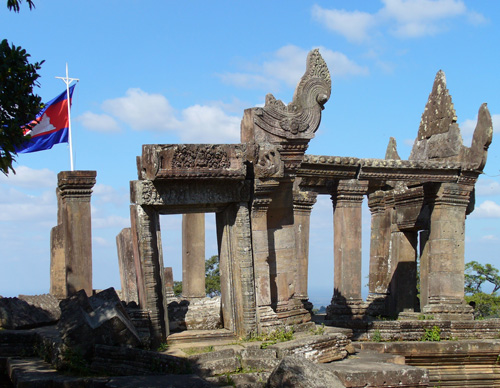 A visit to the Khao Phra Wihaan (alt: Kao Phra Viharn), Anchor period ruins in Cambodia is normally done from Thailand to avoid a six-hour walk through land mined territory in Cambodia. This was the last strong-hold of the Khmer Rouge, and did not reopen to tourists until 1998, after the peace treaty was signed. Much evidence of military presence still exists today. The border guards issue day permits for a nominal fee and require a picture ID as a "deposit". Then you walk through a fortified no-man's land, through a gate, and finally to a clearing now surrounded by vendor tents, from which the ancient steps lead up to the complex.
Some of the structures have been restored, but others lie in total chaos. Apparently many artifacts were removed during the Khmer occupation; additional intricately carved stone slabs lie strewn about, with vendors and cleaning crew using them for stepping stones, fire breaks, and the like. Khao Phra Wihaan was built between the mid-10th and 12th centuries as a Hindu temple complex. It was completed by the same Khmer King that started Angkor Wat.
Enjoy the photos.
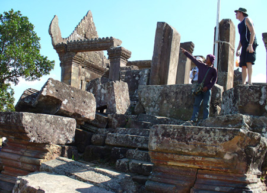 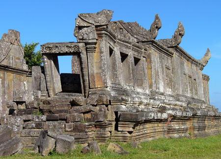
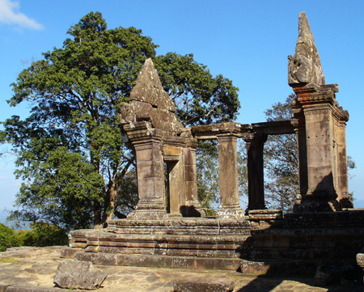 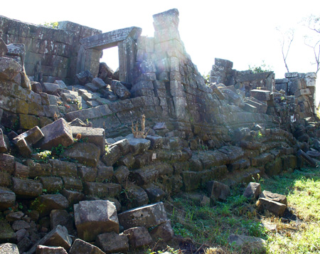
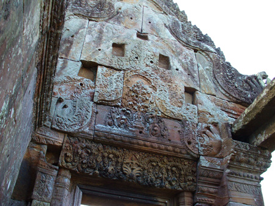 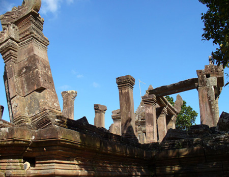
| 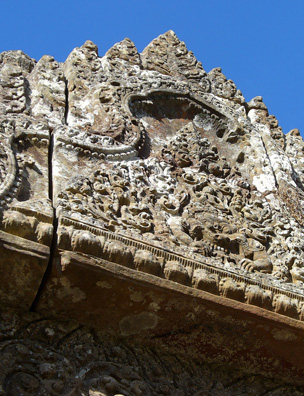 | 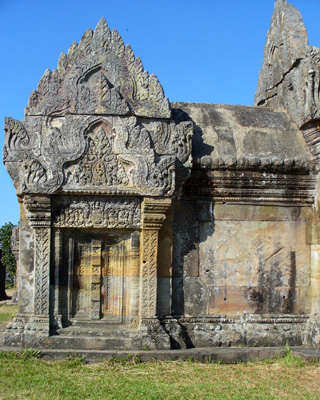 | |
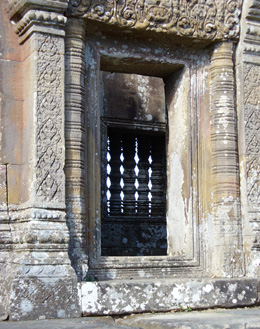 |
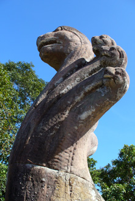 |
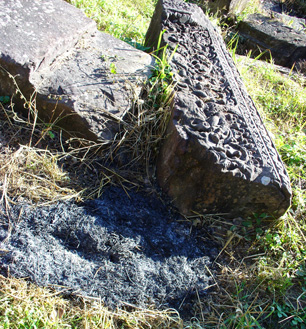 |
| next: Myanmar Visa Take 1 |
| back: Laos-Thailand Entry | ||
| Bamboo Homes in S.E. Asia |